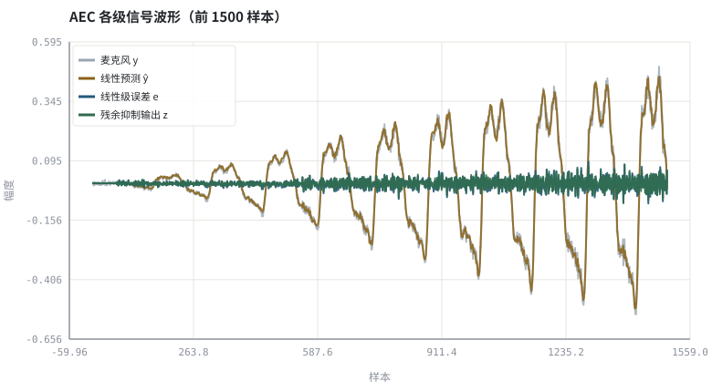
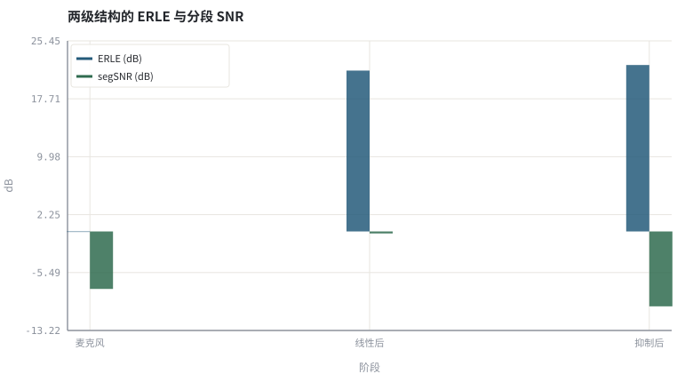

第 09 章AEC 总体结构：参考信号、线性滤波与残余抑制
一条完整回声消除链路只有三类信号，却要同时管住线性、非线性与双讲。
本章位置：第 06 章 · 频域自适应滤波：FDAF、分块 MDF 与收敛 给出频域线性滤波器、第 07 章 · 双讲检测、时延漂移与路径突变 给出双讲保护，本章把它们装进完整链路；第 10 章 · 用 NLMS 实现一个可验证的 AEC 用 NLMS 做可验证实现，第 11 章 · 残余回声抑制与 WebRTC AEC3 结构 升级为 AEC3 结构。
AEC 是一条带旁路输入的流式 pipeline：x 是旁路特征、y 是主数据流、线性级是回归模型、残余级是按特征功率调制的逐 bin 门控。参考信号一旦被 AGC 改过，就等于特征和标签不在同一分布里。
- 能画出 AEC 三级结构并标出每个信号的可观测性。
- 能说明参考信号为什么必须取自播放前的原始缓冲。
- 能写出线性级与残余抑制级各自的输入、输出与失效模式。
- 能运行实验，用 ERLE、segSNR 与 SI-SDR 逐级核对收益。
§知识点地图
每个知识点都配了 1～2 个扩展学习链接；本章完整资源清单见 扩展学习。
| # | 知识点 | 扩展学习 | 状态 |
|---|---|---|---|
| 1 | 远端参考 x[n] | Echo cancellation ↗ · WebRTC AEC3 模块 ↗ | 正文已覆盖 |
| 2 | 麦克风 y[n] | Echo cancellation ↗ · WebRTC AEC3 模块 ↗ | 正文已覆盖 |
| 3 | 线性自适应滤波 | Least mean squares filter ↗ · DSPRelated ↗ | 正文已覆盖 |
| 4 | 误差信号 e[n] | Echo cancellation ↗ · WebRTC AEC3 模块 ↗ | 正文已覆盖 |
| 5 | 残余回声估计 | Echo cancellation ↗ · WebRTC AEC3 模块 ↗ | 正文已覆盖 |
| 6 | 频域后滤波增益 | Cooley–Tukey FFT ↗ · SciPy signal ↗ | 正文已覆盖 |
| 7 | 双讲透明度 | ITU-T G.168 ↗ · Microsoft AEC Challenge ↗ | 正文已覆盖 |
| 8 | 非线性回声与削波 | Echo cancellation ↗ · WebRTC AEC3 模块 ↗ | 正文已覆盖 |
§9.1三级结构，逐级收紧
y[n] = h*x[n] + d[n] + v[n] → e[n] = y[n] − ŵ*x[n] → z[n] = G·e[n]
x[n] 是送给扬声器之前的参考样本，y[n] 是麦克风采集，两者共享同一时钟域与同一份 PCM 数据。第一级用 第 05 章 · 自适应滤波：LMS、NLMS 与收敛/第 06 章 · 频域自适应滤波：FDAF、分块 MDF 与收敛 的自适应滤波预测并减去线性回声；第二级估计剩下的残余回声功率谱，用逐 bin 增益压掉它；第三级（本书 第 11 章 · 残余回声抑制与 WebRTC AEC3 结构、第 24 章 · 神经 AEC 与回声/噪声联合抑制）处理非线性与双讲透明度的折中。
| 级 | 输入 | 输出 | 能解决 | 不能解决 |
|---|---|---|---|---|
| 时延对齐 | x, y | 对齐后的 x | 播放/采集缓冲偏移 | 房间混响形状 |
| 线性 AEC | x, y | e[n] | 线性卷积回声 | 扬声器削波、路径突变瞬间 |
| 残余抑制 | e, ŷ | z[n] | 泄漏与非线性残余 | 强双讲下的近端失真 |
参考必须取自 AGC / 均衡 / 限幅之前的播放缓冲。任何对 x 的非线性处理都会破坏 y 与 x 之间的线性卷积假设，让自适应滤波器去追一个不存在的 h（第 16 章 · 3A 级联顺序与模块间相互干扰 讲级联顺序时会再算一次这笔账）。
§9.2残余抑制是一个功率谱上的 Wiener 型增益
P̂_res[k,t] = γ·|Ŷ[k,t]|² ，G[k,t] = max(G_floor, 1 − β·P̂_res[k,t] / P_e[k,t])
Ŷ 是线性滤波器输出的预测回声谱。关键洞察：即使线性级已经把回声减掉了，Ŷ 仍携带『此刻应该有多少回声』的信息，把它按泄漏系数 γ 缩放就是残余回声功率的廉价估计——这正是 WebRTC AEC3 用线性滤波器输出做残余回声估计的思想。增益逐 bin、逐帧作用，不改相位。
线性级负责能量主体（ERLE 的大头），残余级负责尾巴与非线性。只靠一级把增益做狠，双讲时近端语音会被一起压掉——可懂度换 ERLE 是亏本买卖。
§9.3用三个指标逐级验收
- ERLE：以真实回声 e[n] 与残余回声（输出减去已知近端与噪声）算能量比，分别报线性级与最终输出。
- segSNR：以近端语音为参考，看每级是否让语音更干净。
- SI-SDR：尺度不变，避免增益变化把结论带偏（第 03 章 · 怎么算「变好了」：客观指标、尺度与主观听测 的尺度对齐要求）。
本实验刻意把近端语音放在后 40%（双讲），前段留出单讲让 NLMS 先收敛；这样打印的每个数值都对应一个明确的链路阶段，可逐项复算。
§Python 实验
实验 9-1 · 搭一条三级 AEC：线性 NLMS + 残差谱增益
#!/usr/bin/env python3
# -*- coding: utf-8 -*-
"""合成参考/近端/回声并跑完线性级与残余抑制级，打印各级 ERLE、segSNR 与 SI-SDR，输出可试听 WAV。
全部语音 / 噪声 / 房间冲激响应均为代码合成信号，仅用于教学演示机制与量级。
"""
from __future__ import annotations
import math
import pathlib
import random
import statistics
import sys
import time
_here = pathlib.Path(__file__).resolve()
for _p in _here.parents:
if (_p / "tools" / "dsp.py").exists():
sys.path.insert(0, str(_p / "tools"))
break
from dsp import (SAMPLE_RATE, fft, hann, stft, istft, magnitude_db, spectrum,
white_noise, tone, chirp, synthetic_speech, rir, convolve,
fft_convolve, delay, clip, normalize_peak, rms, rolling_rms,
smooth, db, energy_db, snr_db, erle_db, seg_snr_db,
scale_align, si_sdr_db, lufs_approx,
write_wav, read_wav, wav_info)
from chart import Chart, heatmap, BLUE, RED, GREEN, AMBER
FIG = _here.parents[1] / "fig"
AUDIO = _here.parents[1] / "audio"
FIG.mkdir(exist_ok=True)
AUDIO.mkdir(exist_ok=True)
random.seed(7)
# ---- 参数区 ----
N, L, NF, HOP = 4096, 64, 256, 128
MU = 0.60 # 线性级 NLMS 步长
LEAK = 0.12 # 残余回声功率泄漏系数 γ
BETA = 1.00 # 残余抑制强度 β
FLOOR = 0.18 # 谱增益下限
# ---- 计算与作图 ----
rng = random.Random(7)
far = synthetic_speech(rng, N)
near_raw = synthetic_speech(rng, N)
near = [0.7 * near_raw[i] if i > 0.6 * N else 0.0 for i in range(N)]
h = rir(rng, L, decay=0.005, direct_delay=12)
echo = fft_convolve(far, h)[:N]
noise = white_noise(rng, N, 0.005)
mic = [echo[i] + near[i] + noise[i] for i in range(N)]
w = [0.0] * L
echo_hat, err_linear = [0.0] * N, [0.0] * N
for n in range(L, N):
xv = [far[n - i] for i in range(L)]
y = sum(w[i] * xv[i] for i in range(L))
echo_hat[n] = y
e = mic[n] - y
err_linear[n] = e
p = sum(v * v for v in xv) + 1e-3
for i in range(L):
w[i] += MU * e * xv[i] / p
eh, ef = stft(echo_hat, NF, HOP), stft(err_linear, NF, HOP)
out_frames = []
for t, (re, im) in enumerate(ef):
rr, ii = re[:], im[:]
ehr, ehi = eh[t]
for k in range(NF):
pe = re[k] ** 2 + im[k] ** 2
pr = LEAK * (ehr[k] ** 2 + ehi[k] ** 2)
g = max(FLOOR, 1.0 - BETA * pr / (pe + 1e-9))
rr[k] *= g
ii[k] *= g
out_frames.append((rr, ii))
out = istft(out_frames, NF, HOP, N)
DT_START = int(0.6 * N)
def resid_erle(sig, lo, hi):
r = [sig[i] - near[i] for i in range(lo, hi)]
return erle_db(echo[lo:hi], r)
erle_lin = resid_erle(err_linear, 0, DT_START)
erle_out = resid_erle(out, 0, DT_START)
s0 = seg_snr_db(near, mic)
s1 = seg_snr_db(near, err_linear)
s2 = seg_snr_db(near, scale_align(out, near))
si0 = si_sdr_db(mic[DT_START:], near[DT_START:])
si2 = si_sdr_db(scale_align(out[DT_START:], near[DT_START:]), near[DT_START:])
c = Chart(FIG / "09-stages.svg", "AEC 各级信号波形（前 1500 样本）", xlabel="样本", ylabel="幅度")
c.line(range(1500), mic[:1500], "#9aa6b2", label="麦克风 y", opacity=0.80)
c.line(range(1500), echo_hat[:1500], AMBER, label="线性预测 ŷ", opacity=0.85)
c.line(range(1500), err_linear[:1500], BLUE, label="线性级误差 e", opacity=0.90)
c.line(range(1500), out[:1500], GREEN, label="残余抑制输出 z", opacity=0.90)
print("波形图:", c.save())
d = Chart(FIG / "09-metrics.svg", "两级结构的 ERLE 与分段 SNR", xlabel="阶段", ylabel="dB",
xticks=[(0, "麦克风"), (1, "线性后"), (2, "抑制后")])
d.bars([0, 1, 2], [0.0, erle_lin, erle_out], BLUE, label="ERLE (dB)")
d.bars([0, 1, 2], [s0, s1, s2], GREEN, label="segSNR (dB)")
print("指标图:", d.save())
write_wav(AUDIO / "09-mic.wav", normalize_peak(mic))
write_wav(AUDIO / "09-linear.wav", normalize_peak(err_linear))
write_wav(AUDIO / "09-final.wav", normalize_peak(out))
print("采样率=%d Hz 线性抽头=%d STFT=%d/%d 频率箱宽=%.1f Hz" %
(SAMPLE_RATE, L, NF, HOP, SAMPLE_RATE / NF))
print("ERLE 线性级=%.2f dB 加残余抑制后=%.2f dB | 提升=%.2f dB" %
(erle_lin, erle_out, erle_out - erle_lin))
print("segSNR 麦克风=%.2f 线性后=%.2f 输出=%.2f dB（−10 为下限钳位）| SI-SDR %.2f→%.2f dB" %
(s0, s1, s2, si0, si2))操作：先听 09-mic.wav → 09-linear.wav → 09-final.wav；再对照柱状图里 ERLE 与 segSNR 是否同向变好。 预期与判读：线性级拿走 ERLE 的主体（约 21 dB），简化残余抑制在远端单讲段再抬升不到 1 dB；但因为它没有双讲检测，后 40% 双讲段的近端语音被一起压掉，segSNR 触到 −10 dB 下限、SI-SDR 明显下降。这条负面结果正是 第 24 章 · 神经 AEC 与回声/噪声联合抑制 引入条件化神经后处理的原因：ERLE 单点变好不等于全链路变好。
改参数看趋势：把 BETA 调到 2.0，ERLE 会继续升高但双讲段近端语音变闷；把 LEAK 调到 0.0，残余抑制级退化为旁路。 文件位置：part2/09-aec-architecture/code/09-aec-architecture.py


09-mic.wav
麦克风信号：回声 + 后段双讲近端语音（16 kHz / 16-bit 单声道，代码合成信号，不是真实录音）
09-linear.wav
仅线性 AEC 后的误差信号（16 kHz / 16-bit 单声道，代码合成信号，不是真实录音）
09-final.wav
加残余回声抑制后的最终输出（16 kHz / 16-bit 单声道，代码合成信号，不是真实录音）
代码块右上角可一键复制；仓库里的 code/*.py 由 tools/extract_code.py 从这些代码块自动抽取。脚本只用标准库、固定 random.seed(7)，运行后写出 fig/*.svg 与 audio/*.wav；批量运行用 ./tools/run_python.sh。
§可选真机命令片段
以下命令不参与批量运行，需要本机自行安装对应工具。滤镜是否可用取决于本机 ffmpeg 版本与编译选项，请先用 ffmpeg -filters / ffmpeg -version 自查，并以 https://ffmpeg.org/ffmpeg-filters.html 与各自官方文档为准；本书不假定任何特定版本具备某项能力。
本机自查音频滤镜与 AEC 测试标准入口
ffmpeg -hide_banner -filters | grep -E 'aecho|aresample|astats'说明：只做本机滤镜能力自查；回声消除器测试信号与 ERLE 口径以 https://www.itu.int/rec/T-REC-G.168/en 为准，滤镜可用性以 https://ffmpeg.org/ffmpeg-filters.html 与本机输出为准，本书不假定任何特定版本。
§本章参考资料
按本章知识点挑选的精读资料；更多检索入口见 扩展学习。
§相关开源工程
下列工程仅作技术参照，版权与许可证归各自维护者所有。本书实验不依赖它们，也与之无从属关系。
§常见误区
- 参考信号取自 AGC/均衡之后，线性卷积假设被破坏。
- 忽略播放与采集缓冲延迟，直接让滤波器硬追。
- 只报总 ERLE，不区分线性级与残余抑制级各自的贡献。
- 把残余增益下限设成 0，双讲时近端语音被整片压掉。
§习题与思考
- 画出三级 AEC 框图，标出每级输入、输出与可观测信号。
- 推导 G[k,t] 在 P̂_res ≫ P_e 与 P̂_res ≪ P_e 两种极限下的取值。
- 解释为什么参考信号必须取自播放前而非播放后的缓冲。
§扩展学习
继续检索
- Google Scholar：acoustic echo canceller reference signal residual echo suppressor ↗
- arXiv：acoustic echo canceller reference signal residual echo suppressor ↗
- GitHub：acoustic echo canceller reference signal residual echo suppressor ↗
全书链接总表见 FFmpeg Filters 文档 ↗ 与 附录 A.7；滤镜是否可用请以本机 ffmpeg -filters 为准。
§延伸阅读与内链
- 第 10 章 · 用 NLMS 实现一个可验证的 AEC 用 NLMS 实现可验证 AEC；第 11 章 · 残余回声抑制与 WebRTC AEC3 结构 AEC3 与残余抑制；第 16 章 · 3A 级联顺序与模块间相互干扰 3A 级联顺序。